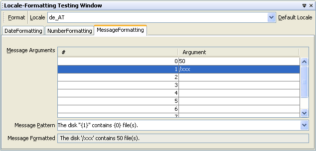

In the tab 'MessageFormatting' you can specify the message format.
In the table 'MessageArguments' you can specify the arguments of a message. For Number, Date arguments the formats specified in the Options Panel 'Message Argument Parse Patterns' is used.
The message patterns details described below are extracted from :
MessageFormat uses patterns of the following form:
MessageFormatPattern:
String
MessageFormatPattern FormatElement String
FormatElement:
{ ArgumentIndex }
{ ArgumentIndex , FormatType }
{ ArgumentIndex , FormatType , FormatStyle }
FormatType: one of
number date time choice
FormatStyle:
short
medium
long
full
integer
currency
percent
SubformatPattern
String:
StringPartopt
String StringPart
StringPart:
''
' QuotedString '
UnquotedString
SubformatPattern:
SubformatPatternPartopt
SubformatPattern SubformatPatternPart
SubFormatPatternPart:
' QuotedPattern '
UnquotedPattern
Within a String, "''" represents a single
quote. A QuotedString can contain arbitrary characters
except single quotes; the surrounding single quotes are removed.
An UnquotedString can contain arbitrary characters
except single quotes and left curly brackets. Thus, a string that
should result in the formatted message "'{0}'" can be written as
"'''{'0}''" or "'''{0}'''".
Within a SubformatPattern, different rules apply.
A QuotedPattern can contain arbitrary characters
except single quotes; but the surrounding single quotes are
not removed, so they may be interpreted by the
subformat. For example, "{1,number,$'#',##}" will
produce a number format with the pound-sign quoted, with a result
such as: "$#31,45".
An UnquotedPattern can contain arbitrary characters
except single quotes, but curly braces within it must be balanced.
For example, "ab {0} de" and "ab '}' de"
are valid subformat patterns, but "ab {0'}' de" and
"ab } de" are not.
The ArgumentIndex value is a non-negative integer written
using the digits '0' through '9', and represents an index into the
arguments array passed to the format methods
or the result array returned by the parse methods.
The FormatType and FormatStyle values are used to create
a Format instance for the format element. The following
table shows how the values map to Format instances. Combinations not
shown in the table are illegal. A SubformatPattern must
be a valid pattern string for the Format subclass used.
| Format Type | Format Style | Subformat Created | |||||||||||||||
|---|---|---|---|---|---|---|---|---|---|---|---|---|---|---|---|---|---|
| (none) | (none) | null
| |||||||||||||||
number
| (none) | NumberFormat.getInstance(getLocale())
| |||||||||||||||
integer
| NumberFormat.getIntegerInstance(getLocale())
| ||||||||||||||||
currency
| NumberFormat.getCurrencyInstance(getLocale())
| ||||||||||||||||
percent
| NumberFormat.getPercentInstance(getLocale())
| ||||||||||||||||
| SubformatPattern | new DecimalFormat(subformatPattern, new DecimalFormatSymbols(getLocale()))
| ||||||||||||||||
date
| (none) | DateFormat.getDateInstance(DateFormat.DEFAULT, getLocale())
| |||||||||||||||
short
| DateFormat.getDateInstance(DateFormat.SHORT, getLocale())
| ||||||||||||||||
medium
| DateFormat.getDateInstance(DateFormat.DEFAULT, getLocale())
| ||||||||||||||||
long
| DateFormat.getDateInstance(DateFormat.LONG, getLocale())
| ||||||||||||||||
full
| DateFormat.getDateInstance(DateFormat.FULL, getLocale())
| ||||||||||||||||
| SubformatPattern | new SimpleDateFormat(subformatPattern, getLocale())
|
Here are some examples of usage. In real internationalized programs, the message format pattern and other static strings will, of course, be obtained from resource bundles. Other parameters will be dynamically determined at runtime.
The first example uses the static method MessageFormat.format,
which internally creates a MessageFormat for one-time use:
int planet = 7;
String event = "a disturbance in the Force";
String result = MessageFormat.format(
"At {1,time} on {1,date}, there was {2} on planet {0,number,integer}.",
planet, new Date(), event);
The output is:
At 12:30 PM on Jul 3, 2053, there was a disturbance in the Force on planet 7.
The following example creates a MessageFormat instance that
can be used repeatedly:
int fileCount = 1273;
String diskName = "MyDisk";
Object[] testArgs = {new Long(fileCount), diskName};
MessageFormat form = new MessageFormat(
"The disk \"{1}\" contains {0} file(s).");
System.out.println(form.format(testArgs));
The output with different values for fileCount:
The disk "MyDisk" contains 0 file(s).
The disk "MyDisk" contains 1 file(s).
The disk "MyDisk" contains 1,273 file(s).
For more sophisticated patterns, you can use a ChoiceFormat
to produce correct forms for singular and plural:
MessageFormat form = new MessageFormat("The disk \"{1}\" contains {0}.");
double[] filelimits = {0,1,2};
String[] filepart = {"no files","one file","{0,number} files"};
ChoiceFormat fileform = new ChoiceFormat(filelimits, filepart);
form.setFormatByArgumentIndex(0, fileform);
int fileCount = 1273;
String diskName = "MyDisk";
Object[] testArgs = {new Long(fileCount), diskName};
System.out.println(form.format(testArgs));
fileCount:
The disk "MyDisk" contains no files.
The disk "MyDisk" contains one file.
The disk "MyDisk" contains 1,273 files.
You can create the ChoiceFormat programmatically, as in the
above example, or by using a pattern. See ChoiceFormat
for more information.
form.applyPattern(
"There {0,choice,0#are no files|1#is one file|1<are {0,number,integer} files}.");
Note: As we see above, the string produced
by a ChoiceFormat in MessageFormat is treated specially;
occurences of '{' are used to indicated subformats, and cause recursion.
If you create both a MessageFormat and ChoiceFormat
programmatically (instead of using the string patterns), then be careful not to
produce a format that recurses on itself, which will cause an infinite loop.
When a single argument is parsed more than once in the string, the last match will be the final result of the parsing. For example,
MessageFormat mf = new MessageFormat("{0,number,#.##}, {0,number,#.#}");
Object[] objs = {new Double(3.1415)};
String result = mf.format( objs );
// result now equals "3.14, 3.1"
objs = null;
objs = mf.parse(result, new ParsePosition(0));
// objs now equals {new Double(3.1)}
Likewise, parsing with a MessageFormat object using patterns containing multiple occurences of the same argument would return the last match. For example,
MessageFormat mf = new MessageFormat("{0}, {0}, {0}");
String forParsing = "x, y, z";
Object[] objs = mf.parse(forParsing, new ParsePosition(0));
// result now equals {new String("z")}